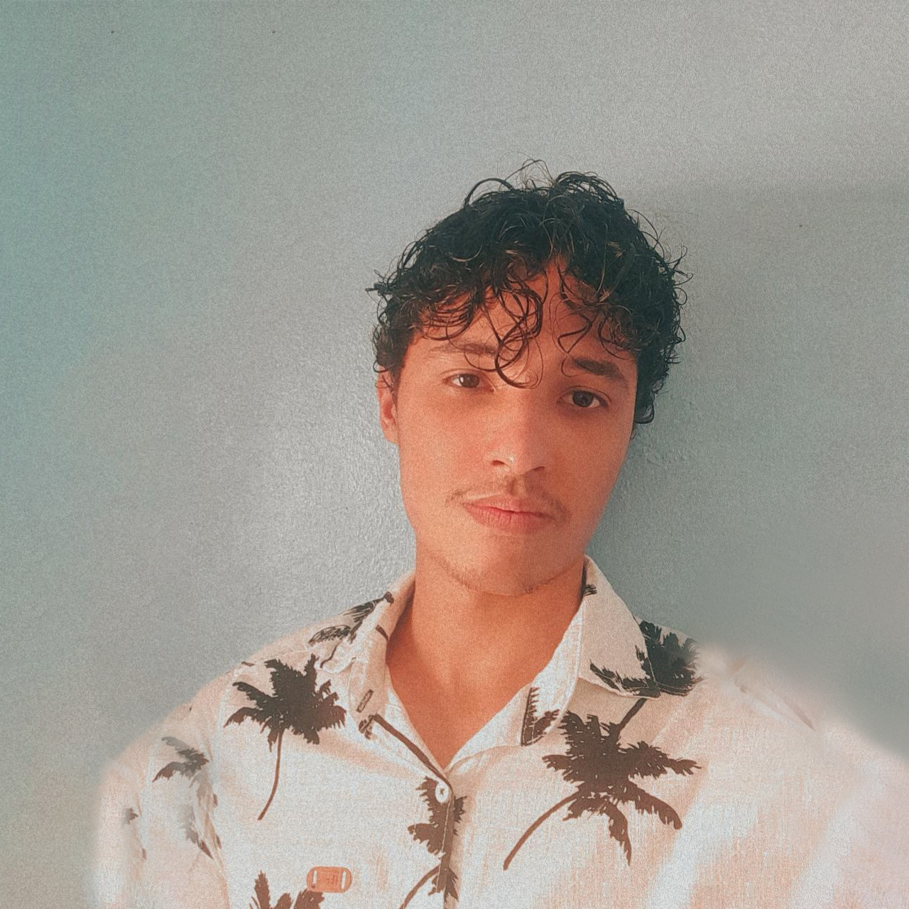

Olá me chamo Victor Matias, mas meus amigos me chamam de Matias. Nasci no dia 16 de maio de 2003 e no momento que estou escrevendo este texto tenho 19 anos. Não tenho muito sobre o que falar de mim pois ainda estou no começo da vida (assim espero), mas ao longo desses anos descobri variós hobbys e áreas de interesse, a maioria no mundo digital e na informática. Com o crescimento do Youtube fui me aproximando cada vez do mundo do áudiovisual e assim fui aprendendo a editar vídeos, que hoje é um dos meus hobbys favoritos, passei em torno de 4 anos aprendendo e editando para mim mesmo apenas como um passatempo, a segunda foto do banner é um print da timeline de um vídeo que editei. Em 2018 eu comecei a fazer meu ensino médio integrado com curso técnico em eletrotécnica e eu não esperava que fosse gostar tanto da aréa elétrica, a terceira foto do banner é um print da planta baixa do projeto elétrico de um apartamento.
Tendo que ficar em casa em 2020 por causa da pandemia causada pela covid-19, no tédio veio a ideia de aprender programar e a linguagem que escolhi foi o python, inclusive a primeira foto do banner é um print da resolução em pyhton de um questão da faculdade. Depois de um tempo apredendo python comecei a integrar esse conhecimento com o meu curso de eletrotécnica, que eu ainda estava fazendo, fui realizando pequenos algoritmos para me ajudar em algumas matérias do curso até migrar para um projeto um pouco mais "complexo", a calculadora de números complexos e sistemas trifásicos de potências equilibrados e desequilibrados, que é o projeto em que ainda estou trabalhando atualmente. Em agosto de 2022 me formei em eletrotécnica, cerca de um mês atrás, enquanto começava o primeiro período de ciência da computação na UFPE, o qual ainda estou cursando.